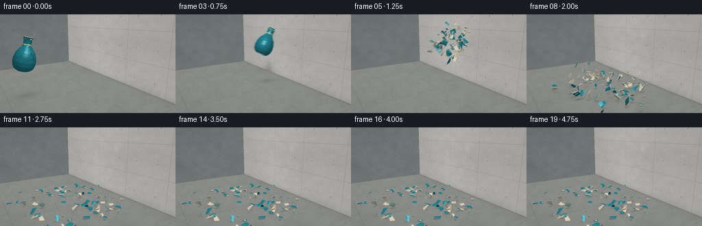
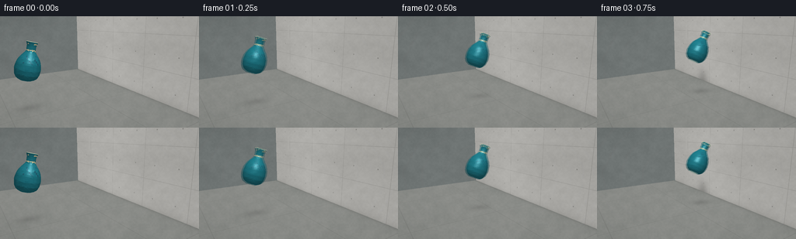

CODING AGENTS AS PIXEL WORLD MODELS
traex/GPT-6.1-Sol · phygen_132
点击播放 · 原生 RGB 像素
逐轮保存的候选
回放视频、检查图与代码变化。
每份候选均可单独播放。实际图片检查记录在下方工具轨迹中。
候选 01播放与检查图
点击播放 · 原生 RGB 像素


展开代码变化
--- 上一保存版本
+++ 本次保存版本
@@ -0,0 +1,351 @@
+from pathlib import Path
+import json
+import math
+import numpy as np
+from PIL import Image, ImageDraw, ImageFilter
+from artifact_io import save
+
+ROOT = Path(__file__).resolve().parent
+SPEC = json.loads((ROOT/'task_spec.json').read_text())
+W,H = SPEC['width'], SPEC['height']
+S=3
+WW,HH=W*S,H*S
+rng=np.random.default_rng(1327)
+CAM=np.array([-6.8,-10.,4.6])
+TARGET=np.array([-.2,0.,1.65])
+FORWARD=TARGET-CAM; FORWARD/=np.linalg.norm(FORWARD)
+RIGHT=np.cross(FORWARD,[0,0,1.]); RIGHT/=np.linalg.norm(RIGHT)
+UP=np.cross(RIGHT,FORWARD)
+FOCAL=250*S
+WALL=2.35
+LIGHT=np.array([-3.5,-4.5,8.5])
+
+
+def unit(v):
+ return v/np.maximum(np.linalg.norm(v,axis=-1,keepdims=True),1e-9)
+
+def project(p):
+ q=np.asarray(p)-CAM
+ dep=q@FORWARD
+ return np.stack([WW/2+FOCAL*(q@RIGHT)/dep, HH/2-FOCAL*(q@UP)/dep],axis=-1),dep
+
+def rot(axis,a):
+ axis=unit(np.asarray(axis,dtype=float));x,y,z=axis
+ K=np.array([[0,-z,y],[z,0,-x],[-y,x,0.]])
+ return np.eye(3)+np.sin(a)*K+(1-np.cos(a))*(K@K)
+
+def align(a,b):
+ a=unit(a);b=unit(b);ax=np.cross(a,b); co=np.clip(a@b,-1,1)
+ if np.linalg.norm(ax)<1e-7:
+ return np.eye(3) if co>0 else rot([1,0,0],np.pi)
+ return rot(ax,np.arccos(co))
+
+# A fixed, textured architectural setting. All geometry is computed locally.
+yy,xx=np.mgrid[0:HH,0:WW]
+rays=FORWARD+(xx[...,None]-WW/2)/FOCAL*RIGHT-(yy[...,None]-HH/2)/FOCAL*UP
+with np.errstate(divide='ignore',invalid='ignore'):
+ tf=-CAM[2]/rays[:,:,2]
+ tw=(WALL-CAM[0])/rays[:,:,0]
+ tb=(8.0-CAM[1])/rays[:,:,1]
+pf=CAM+tf[...,None]*rays
+pw=CAM+tw[...,None]*rays
+pb=CAM+tb[...,None]*rays
+validw=(tw>0)&(pw[:,:,1]>-5.8)&(pw[:,:,1]<8)&(pw[:,:,2]>=0)&(pw[:,:,2]<=7)
+validf=(tf>0)
+validb=(tb>0)&(pb[:,:,2]>=0)&(pb[:,:,2]<6)&(pb[:,:,0]<WALL)
+zbuf=np.full((HH,WW),1e9)
+kind=np.zeros((HH,WW),int)
+for k,d,v in [(1,tf,validf),(2,tb,validb),(3,tw,validw)]:
+ m=v&(d<zbuf);zbuf[m]=d[m];kind[m]=k
+POINT=CAM+np.minimum(zbuf,100)[...,None]*rays
+# Multiscale fine concrete aggregate, not just a featureless gray plane.
+def noise_map(sx,sy):
+ a=rng.integers(0,256,(sy,sx),dtype=np.uint8)
+ return np.asarray(Image.fromarray(a).resize((WW,HH),Image.Resampling.BICUBIC),float)/255-.5
+noise=3.2*noise_map(WW,HH)+4.0*noise_map(126,74)+5*noise_map(34,22)+4*noise_map(8,6)
+base=np.empty((HH,WW,3),float)
+base[:]=np.array([111,119,122])+(yy/HH)[...,None]*12
+fm=kind==1;wm=kind==3;bm=kind==2
+xw,yw,zw=POINT[:,:,0],POINT[:,:,1],POINT[:,:,2]
+base[fm]=np.stack([139+noise*1.1,141+noise,137+noise],-1)[fm]
+base[bm]=np.stack([113+noise,119+noise,118+noise],-1)[bm]
+walltone=169+noise+3*np.sin(yw*.57)+2*np.sin(zw*1.6)
+base[wm]=np.stack([walltone+3,walltone+2,walltone-2],-1)[wm]
+# Concrete formwork joints, dark recessed pinholes, and faint runoff.
+seamy=np.abs((yw+1.3+1.65)%3.3-1.65)
+seamz=np.abs((zw+.15+1.05)%2.1-1.05)
+joint=np.maximum(np.exp(-(seamy/.012)**2),np.exp(-(seamz/.010)**2))
+base[wm]-=(joint*22)[wm,None]
+hy=np.abs((yw+.5+.825)%1.65-.825)
+hz=np.abs((zw-.75+1.05)%2.1-1.05)
+hole=(hy/.034)**2+(hz/.031)**2
+base[wm]-=(np.exp(-hole*1.1)*54)[wm,None]
+runoff=np.exp(-(hy/.036)**2)*np.exp(-np.maximum((zw-.75)%2.1,0)/.35)*1.3
+base[wm]-=runoff[wm,None]
+# Very restrained floor expansion joints and ambient occlusion at the foot of the wall.
+floorjoint=np.maximum(np.exp(-(np.abs((xw+.6+2.5)%5-2.5)/.018)**2), np.exp(-(np.abs((yw+.5+2.5)%5-2.5)/.018)**2))
+base[fm]-=(floorjoint*11)[fm,None]
+base[fm]-=(18*np.exp(-np.abs(xw-WALL)/.17))[fm,None]
+base[wm]-=(13*np.exp(-zw/.14))[wm,None]
+# Falloff and a gentle lens vignette.
+vignette=1-.065*((xx-WW*.49)**2/(WW*.72)**2+(yy-HH*.45)**2/(HH*.9)**2)
+BASE=base
+
+# Thin-walled pottery, modelled as a hollow surface of revolution.
+profile_z=np.array([-1.,-.96,-.86,-.69,-.43,-.13,.12,.31,.46,.56,.76,.91,.97])
+profile_r=np.array([.28,.39,.51,.60,.64,.60,.50,.36,.245,.218,.22,.255,.285])
+def radius(z):
+ return np.interp(z,profile_z,profile_r)
+
+def surface(theta,z,inside=False):
+ r=radius(z)-(0.024 if inside else 0)
+ return np.stack([r*np.cos(theta),r*np.sin(theta),z],-1)
+
+NA,NZ=12,7
+nodes=np.zeros((NA+1,NZ+1,2))
+for a in range(NA):
+ for j in range(NZ+1):
+ nodes[a,j]=[a*2*np.pi/NA+rng.uniform(-.075,.075), -1+j*1.97/NZ+(rng.uniform(-.09,.09) if 0<j<NZ else 0)]
+nodes[NA]=nodes[0];nodes[NA,:,0]+=2*np.pi
+patches=[]
+SUB=4
+for a in range(NA):
+ for j in range(NZ):
+ uv=np.empty((SUB+1,SUB+1,2))
+ for q in range(SUB+1):
+ for k in range(SUB+1):
+ u=q/SUB;v=k/SUB
+ uv[q,k]=(1-u)*(1-v)*nodes[a,j]+u*(1-v)*nodes[a+1,j]+u*v*nodes[a+1,j+1]+(1-u)*v*nodes[a,j+1]
+ outer=surface(uv[:,:,0],uv[:,:,1]);inner=surface(uv[:,:,0],uv[:,:,1],True)
+ cen=outer.reshape(-1,3).mean(0)
+ faces=[]; normals=[]; colors=[]; types=[]
+ def addface(pts,normal,color,typ):
+ faces.append(pts-cen);normals.append(normal);colors.append(color);types.append(typ)
+ for q in range(SUB):
+ for k in range(SUB):
+ ids=[(q,k),(q+1,k),(q+1,k+1),(q,k+1)]
+ p=np.array([outer[i] for i in ids]); inn=np.array([inner[i] for i in ids])
+ norm=unit(np.cross(p[1]-p[0],p[3]-p[0]))
+ if norm[:2]@p.mean(0)[:2]<0:norm=-norm
+ z=p[:,2].mean();theta=np.arctan2(p[:,1].mean(),p[:,0].mean())
+ color=np.array([31.,117.,130.])
+ # A delicate hand-painted band beneath the lip and on the shoulder.
+ if .515<z<.58 or .86<z<.895:
+ color=np.array([209.,194.,151.])
+ elif -.13<z<.31:
+ wave=np.sin(10*theta+18*z)
+ if wave>.90:color=np.array([34.,90.,107.])
+ color+=rng.uniform(-2.4,2.4)
+ addface(p,norm,color,0)
+ addface(inn[::-1],-norm,np.array([197.,186.,162.]),1)
+ for edge in range(4):
+ for n in range(SUB):
+ if edge==0:i0=(0,n);i1=(0,n+1)
+ elif edge==1:i0=(SUB,n+1);i1=(SUB,n)
+ elif edge==2:i0=(n+1,0);i1=(n,0)
+ else:i0=(n,SUB);i1=(n+1,SUB)
+ p=np.array([outer[i0],outer[i1],inner[i1],inner[i0]])
+ nn=unit(np.cross(p[1]-p[0],p[3]-p[0]))
+ addface(p,nn,np.array([218.,208.,184.]),2)
+ patches.append(dict(center=cen,faces=np.array(faces),normals=np.array(normals),colors=np.array(colors),types=np.array(types),radial=unit(np.array([cen[0],cen[1],0.]))))
+
+HIT=1.0
+R0=rot([0,1,0],.60)
+ALL=np.concatenate([p['faces'].reshape(-1,3)+p['center'] for p in patches])
+maxx=(ALL@R0.T)[:,0].max()
+IMPACT=np.array([WALL-maxx-.006,0.,3.35])
+STARTX=-4.45
+
+def intact_pose(t):
+ return np.array([STARTX+(IMPACT[0]-STARTX)*t/HIT,0.,2.8+.8*t-.25*t*t]),rot([0,1,0],.25+.35*t)
+
+# Deterministic fragment rigid-body trajectories with wall reflection, gravity,
+# inelastic bounces, tumbling and friction. The wall itself never moves.
+DT=1/240
+NST=int(4.05/DT)+1
+states=[]
+for idx,p in enumerate(patches):
+ local=p['faces'].reshape(-1,3)
+ pos=IMPACT+p['center']@R0.T
+ nr=p['radial']@R0.T
+ vel=np.array([-2.7+1.3*nr[0]+rng.normal(0,.8),2.05*nr[1]+rng.normal(0,.7),rng.uniform(-.8,2.1)+.5*p['center'][2]])
+ axis=unit(rng.normal(size=3));spin=rng.uniform(5,14)*rng.choice([-1,1])
+ rest=rot([0,0,1],rng.uniform(0,2*np.pi))@align(p['radial'],np.array([0,0,1 if rng.random()>.3 else -1.]))
+ track=np.empty((NST,3));rots=np.empty((NST,3,3));first=None;firstR=None;grounded=False
+ for step in range(NST):
+ tt=step*DT
+ if first is None:
+ R=rot(axis,spin*tt)@R0
+ else:
+ f=min(1.,(tt-first)/.48)
+ mix=(1-f)*firstR+f*rest
+ uu,_,vv=np.linalg.svd(mix);R=uu@vv
+ if np.linalg.det(R)<0:uu[:,-1]*=-1;R=uu@vv
+ ext=-(local@R.T)[:,2].min()+.015
+ if not grounded:
+ vel[2]-=9.8*DT;pos+=vel*DT
+ right=(local@R.T)[:,0].max()
+ if pos[0]+right>WALL-.012:
+ pos[0]=WALL-.012-right
+ if vel[0]>0:vel[0]*=-.5
+ if pos[2]<ext:
+ pos[2]=ext
+ if first is None:first=tt;firstR=R.copy()
+ vel[2]=abs(vel[2])*.22;vel[:2]*=.61
+ if vel[2]<.42:grounded=True;vel[2]=0
+ else:
+ pos[:2]+=vel[:2]*DT;vel[:2]*=np.exp(-7*DT);pos[2]=ext
+ track[step]=pos;rots[step]=R
+ states.append((track,rots))
+
+# Small chips follow the same acceleration, independently of the big curved shards.
+chips=[]
+for i in range(38):
+ start=IMPACT+np.array([rng.uniform(.05,.5),rng.normal(0,.2),rng.normal(0,.3)])
+ v=np.array([rng.uniform(-5,-.2),rng.uniform(-3.2,3.2),rng.uniform(-1.5,3.4)])
+ chips.append((start,v,rng.uniform(.018,.048),rng.uniform(0,2*np.pi)))
+
+def fragment_pose(i,t):
+ st=np.clip((t-HIT)/DT,0,NST-1.001);k=int(st);f=st-k
+ tr,rr=states[i]
+ return (1-f)*tr[k]+f*tr[k+1],rr[k]
+
+# Subtle volumetric ceramic powder, dispersed from the contact instead of fire/smoke.
+dust_seeds=[]
+for i in range(36):
+ dust_seeds.append((rng.uniform(-1.4,-.15),rng.normal(0,.6),rng.normal(0,.45),rng.uniform(.10,.26),rng.uniform(.7,1.3)))
+
+def shadow_environment(t, poses):
+ bg=BASE.copy()
+ shade=np.zeros((HH,WW))
+ if t<=HIT:
+ center,R=intact_pose(min(t,HIT))
+ # The wall receives a soft silhouette that tightens as the vase approaches.
+ ld=center-LIGHT
+ lam=(WALL-center[0])/max(ld[0],.01)
+ sc=center+ld*lam
+ sz=.66+.8*max(0,WALL-center[0])*.15
+ wallsh=np.exp(-(((yw-sc[1])/sz)**2+((zw-sc[2])/(sz*1.4))**2)*2)
+ strength=.27*np.exp(-max(WALL-center[0],0)*.12)
+ shade[wm]+=wallsh[wm]*strength
+ floorc=center[:2]-.16*(LIGHT[:2]-center[:2])
+ floor_sh=np.exp(-(((xw-floorc[0])/.9)**2+((yw-floorc[1])/.65)**2)*2)
+ shade[fm]+=floor_sh[fm]*.11
+ else:
+ for i,(pos,R) in enumerate(poses):
+ if pos[2]>2.2:continue
+ r=.12+.13*pos[2]
+ g=np.exp(-(((xw-pos[0])/(r*1.4))**2+((yw-pos[1])/r)**2)*2)
+ shade[fm]+=g[fm]*(.16*np.exp(-pos[2]*1.0))
+ # No cracked concrete: just a small powder scuff at the contact point.
+ tt=t-HIT
+ d=((yw+.10)/.33)**2+((zw-3.50)/.37)**2
+ powder=np.exp(-d*1.3)*(1-np.exp(-tt*15))
+ bg[wm]+=powder[wm,None]*np.array([7.,7.,6.])
+ bg*=np.clip(1-shade, .64,1)[...,None]
+ return Image.fromarray(np.uint8(np.clip(bg,0,255)))
+
+def render(t):
+ intact=t<=HIT+1e-8
+ if intact:
+ c,R=intact_pose(min(t,HIT));poses=[(c+p['center']@R.T,R) for p in patches]
+ else:
+ poses=[fragment_pose(i,t) for i in range(len(patches))]
+ img=shadow_environment(t,poses)
+ # A pale impact puff, mostly behind the flying ceramic, with no graphic symbols.
+ if not intact and t-HIT<1.25:
+ tt=t-HIT
+ layer=Image.new('RGBA',(WW,HH));d=ImageDraw.Draw(layer)
+ strength=np.exp(-tt*3.2)*(1-np.exp(-tt*24))
+ for vx,vy,vz,size,amp in dust_seeds:
+ p=IMPACT+np.array([.44+vx*tt,vy*tt,.17+vz*tt-.55*tt*tt])
+ xy,dep=project(p);rad=FOCAL*(size+.26*tt)/dep
+ alpha=int(31*strength*amp)
+ d.ellipse((xy[0]-rad,xy[1]-rad*.8,xy[0]+rad,xy[1]+rad*.8),fill=(212,205,185,alpha))
+ layer=layer.filter(ImageFilter.GaussianBlur(4*S))
+ img=Image.alpha_composite(img.convert('RGBA'),layer).convert('RGB')
+ all_faces=[];all_norm=[];all_col=[];all_typ=[]
+ for p,(pos,R) in zip(patches,poses):
+ faces=p['faces']@R.T+pos
+ normals=p['normals']@R.T
+ center=faces.mean(1)
+ facing=np.sum(normals*(CAM-center),axis=1)>0
+ # The tessellation fractures are hidden until the instant of collision.
+ if intact:
+ facing&=(p['types']!=2)
+ all_faces.append(faces[facing]);all_norm.append(normals[facing]);all_col.append(p['colors'][facing]);all_typ.append(p['types'][facing])
+ faces=np.concatenate(all_faces);norms=np.concatenate(all_norm);colors=np.concatenate(all_col);types=np.concatenate(all_typ)
+ center=faces.mean(1)
+ ld=unit(LIGHT-center);vd=unit(CAM-center)
+ diffuse=np.maximum(0,np.sum(norms*ld,axis=1))
+ ambient=.57+.12*np.maximum(0,norms[:,2])
+ lighting=ambient+.47*diffuse
+ halfway=unit(ld+vd)
+ spec=np.maximum(0,np.sum(norms*halfway,axis=1))**43
+ spec*=np.where(types==0,78,4)
+ cols=np.clip(colors*lighting[:,None]+spec[:,None],0,255).astype(np.uint8)
+ pts,dep=project(faces)
+ order=np.argsort(dep.mean(1))[::-1]
+ d=ImageDraw.Draw(img)
+ for k in order:
+ if dep[k].min()<1:continue
+ p=pts[k]
+ if p[:,0].max()<0 or p[:,0].min()>WW or p[:,1].max()<0 or p[:,1].min()>HH:continue
+ d.polygon([tuple(a) for a in p],fill=tuple(cols[k]))
+ # Bottom foot and open lip remain coherent while airborne.
+ if intact:
+ c,R=intact_pose(min(t,HIT))
+ th=np.linspace(0,2*np.pi,96,endpoint=False)
+ bottom=surface(th,np.full(len(th),-1.001))@R.T+c
+ n=np.array([0,0,-1.])@R.T
+ if n@(CAM-bottom.mean(0))>0:
+ pp,_=project(bottom);d.polygon([tuple(v) for v in pp],fill=(133,152,143))
+ # Narrow ivory rim: the dark hollow mouth is visible, never capped.
+ mouth_o=surface(th,np.full(len(th),.97))@R.T+c
+ mouth_i=surface(th,np.full(len(th),.97),True)@R.T+c
+ for k in range(96):
+ kk=(k+1)%96
+ face=np.array([mouth_o[k],mouth_o[kk],mouth_i[kk],mouth_i[k]])
+ p,_=project(face);d.polygon([tuple(v) for v in p],fill=(209,208,174))
+ if abs(t-HIT)<.0001:
+ # Fine cracks on the forward side mark the single contact frame.
+ for zz,angle in [(-.3,5.5),(.25,5.75),(.45,5.95)]:
+ theta=np.array([angle,angle+.025,angle-.015,angle+.06])
+ zs=np.array([zz-.14,zz-.04,zz+.025,zz+.12])
+ pp,_=project(surface(theta,zs)@R.T+c)
+ d.line([tuple(v) for v in pp],fill=(25,68,71),width=1*S)
+ else:
+ tt=t-HIT
+ for p,v,size,phase in chips:
+ q=p+v*tt+np.array([0,0,-4.9*tt*tt])
+ if q[2]<size:
+ hit=(v[2]+np.sqrt(v[2]**2+19.6*(p[2]-size)))/9.8
+ q=p+v*hit+np.array([0,0,-4.9*hit*hit]);q[2]=size
+ q[:2]+=v[:2]*.12*(1-np.exp(-max(0,tt-hit)*5))
+ xy,dep=project(q);r=FOCAL*size/dep
+ a=phase+tt*9
+ vertices=[(xy[0]+r*np.cos(a+k*2*np.pi/3),xy[1]+r*np.sin(a+k*2*np.pi/3)*.6) for k in range(3)]
+ d.polygon(vertices,fill=(202,194,169) if phase<2.2 else (47,112,120))
+ ar=np.asarray(img,float)*vignette[...,None]
+ return np.uint8(np.clip(ar,0,255))
+
+
+def main():
+ frames=[]
+ for i in range(SPEC['frames']):
+ t=i/SPEC['fps']
+ # Sub-frame shutter integration gives rapid flight and ejecta slight motion blur,
+ # while preserving an unequivocal contact frame and crisp settled debris.
+ if 0<i<10 and i!=4:
+ a=render(t-.008);b=render(t+.008)
+ rgb=np.uint8((a.astype(float)+b.astype(float))*.5)
+ else:
+ rgb=render(t)
+ frame=np.asarray(Image.fromarray(rgb).resize((W,H),Image.Resampling.LANCZOS))
+ frames.append(frame)
+ print(f'Rendered {i+1}/{SPEC["frames"]}',flush=True)
+ frames=np.stack(frames).astype(np.uint8)
+ save(frames, ROOT)
+ print('Saved RGB video artifacts.',flush=True)
+
+if __name__=='__main__': main()
可观测工具轨迹
实际执行的命令与返回图片。
命令 1exit 0
/bin/bash -lc 'ls -la && cat prompt.txt && cat GENERATION_RULES.md && cat task_spec.json'
命令 2exit 0
/bin/bash -lc "cat artifact_io.py && python - <<'PY'
import numpy,PIL
print('numpy', numpy.__version__, 'PIL', PIL.__version__)
PY"命令 3exit 0
/bin/bash -lc "python - <<'PY' import numpy as np cam=np.array([-7.,-11.,5.7]); target=np.array([-.5,0,1.7]); f=(target-cam);f/=np.linalg.norm(f);r=np.cross(f,[0,0,1]);r/=np.linalg.norm(r);u=np.cross(r,f) for p in [[-4,0,2.5],[1.35,0,2.4],[2.2,0,0],[2.2,-2.5,0],[2.2,8,0],[2.2,-2.5,5],[2.2,8,5]]: q=np.array(p)-cam;d=q@f;print(p,128+q@r/d*220,72-q@u/d*220) PY"
命令 4exit 0
/bin/bash -lc "python - <<'PY' import numpy as np c=np.array([-6.8,-10,4.6]);f=np.array([-.2,0,1.65])-c;f/=np.linalg.norm(f);r=np.cross(f,[0,0,1]);r/=np.linalg.norm(r);u=np.cross(r,f) for p in [[-4.45,0,2.75],[1.7,0,2.75],[2.35,-3.4,0],[2.35,7,0],[2.35,-3.4,6.5],[2.35,7,6.5]]: a=np.array(p)-c;print(p,128+250*a@r/(a@f),72-250*a@u/(a@f)) PY"
命令 5exit 0
/bin/bash -lc 'which ffmpeg || true'
命令 6exit 0
/bin/bash -lc "cat > generate.py <<'PY'
from pathlib import Path
import json
import math
import numpy as np
from PIL import Image, ImageDraw, ImageFilter
from artifact_io import save
ROOT = Path(__file__).resolve().parent
SPEC = json.loads((ROOT/'task_spec.json').read_text())
W,H = SPEC['width'], SPEC['height']
S=3
WW,HH=W*S,H*S
rng=np.random.default_rng(1327)
CAM=np.array([-6.8,-10.,4.6])
TARGET=np.array([-.2,0.,1.65])
FORWARD=TARGET-CAM; FORWARD/=np.linalg.norm(FORWARD)
RIGHT=np.cross(FORWARD,[0,0,1.]); RIGHT/=np.linalg.norm(RIGHT)
UP=np.cross(RIGHT,FORWARD)
FOCAL=250*S
WALL=2.35
LIGHT=np.array([-3.5,-4.5,8.5])
def unit(v):
return v/np.maximum(np.linalg.norm(v,axis=-1,keepdims=True),1e-9)
def project(p):
q=np.asarray(p)-CAM
dep=q@FORWARD
return np.stack([WW/2+FOCAL*(q@RIGHT)/dep, HH/2-FOCAL*(q@UP)/dep],axis=-1),dep
def rot(axis,a):
axis=unit(np.asarray(axis,dtype=float));x,y,z=axis
K=np.array([[0,-z,y],[z,0,-x],[-y,x,0.]])
return np.eye(3)+np.sin(a)*K+(1-np.cos(a))*(K@K)
def align(a,b):
a=unit(a);b=unit(b);ax=np.cross(a,b); co=np.clip(a@b,-1,1)
if np.linalg.norm(ax)<1e-7:
return np.eye(3) if co>0 else rot([1,0,0],np.pi)
return rot(ax,np.arccos(co))
# A fixed, textured architectural setting. All geometry is computed locally.
yy,xx=np.mgrid[0:HH,0:WW]
rays=FORWARD+(xx[...,None]-WW/2)/FOCAL*RIGHT-(yy[...,None]-HH/2)/FOCAL*UP
with np.errstate(divide='ignore',invalid='ignore'):
tf=-CAM[2]/rays[:,:,2]
tw=(WALL-CAM[0])/rays[:,:,0]
tb=(8.0-CAM[1])/rays[:,:,1]
pf=CAM+tf[...,None]*rays
pw=CAM+tw[...,None]*rays
pb=CAM+tb[...,None]*rays
validw=(tw>0)&(pw[:,:,1]>-5.8)&(pw[:,:,1]<8)&(pw[:,:,2]>=0)&(pw[:,:,2]<=7)
validf=(tf>0)
validb=(tb>0)&(pb[:,:,2]>=0)&(pb[:,:,2]<6)&(pb[:,:,0]<WALL)
zbuf=np.full((HH,WW),1e9)
kind=np.zeros((HH,WW),int)
for k,d,v in [(1,tf,validf),(2,tb,validb),(3,tw,validw)]:
m=v&(d<zbuf);zbuf[m]=d[m];kind[m]=k
POINT=CAM+np.minimum(zbuf,100)[...,None]*rays
# Multiscale fine concrete aggregate, not just a featureless gray plane.
def noise_map(sx,sy):
a=rng.integers(0,256,(sy,sx),dtype=np.uint8)
return np.asarray(Image.fromarray(a).resize((WW,HH),Image.Resampling.BICUBIC),float)/255-.5
noise=3.2*noise_map(WW,HH)+4.0*noise_map(126,74)+5*noise_map(34,22)+4*noise_map(8,6)
base=np.empty((HH,WW,3),float)
base[:]=np.array([111,119,122])+(yy/HH)[...,None]*12
fm=kind==1;wm=kind==3;bm=kind==2
xw,yw,zw=POINT[:,:,0],POINT[:,:,1],POINT[:,:,2]
base[fm]=np.stack([139+noise*1.1,141+noise,137+noise],-1)[fm]
base[bm]=np.stack([113+noise,119+noise,118+noise],-1)[bm]
walltone=169+noise+3*np.sin(yw*.57)+2*np.sin(zw*1.6)
base[wm]=np.stack([walltone+3,walltone+2,walltone-2],-1)[wm]
# Concrete formwork joints, dark recessed pinholes, and faint runoff.
seamy=np.abs((yw+1.3+1.65)%3.3-1.65)
seamz=np.abs((zw+.15+1.05)%2.1-1.05)
joint=np.maximum(np.exp(-(seamy/.012)**2),np.exp(-(seamz/.010)**2))
base[wm]-=(joint*22)[wm,None]
hy=np.abs((yw+.5+.825)%1.65-.825)
hz=np.abs((zw-.75+1.05)%2.1-1.05)
hole=(hy/.034)**2+(hz/.031)**2
base[wm]-=(np.exp(-hole*1.1)*54)[wm,None]
runoff=np.exp(-(hy/.036)**2)*np.exp(-np.maximum((zw-.75)%2.1,0)/.35)*1.3
base[wm]-=runoff[wm,None]
# Very restrained floor expansion joints and ambient occlusion at the foot of the wall.
floorjoint=np.maximum(np.exp(-(np.abs((xw+.6+2.5)%5-2.5)/.018)**2), np.exp(-(np.abs((yw+.5+2.5)%5-2.5)/.018)**2))
base[fm]-=(floorjoint*11)[fm,None]
base[fm]-=(18*np.exp(-np.abs(xw-WALL)/.17))[fm,None]
base[wm]-=(13*np.exp(-zw/.14))[wm,None]
# Falloff and a gentle lens vignette.
vignette=1-.065*((xx-WW*.49)**2/(WW*.72)**2+(yy-HH*.45)**2/(HH*.9)**2)
BASE=base
# Thin-walled pottery, modelled as a hollow surface of revolution.
profile_z=np.array([-1.,-.96,-.86,-.69,-.43,-.13,.12,.31,.46,.56,.76,.91,.97])
profile_r=np.array([.28,.39,.51,.60,.64,.60,.50,.36,.245,.218,.22,.255,.285])
def radius(z):
return np.interp(z,profile_z,profile_r)
def surface(theta,z,inside=False):
r=radius(z)-(0.024 if inside else 0)
return np.stack([r*np.cos(theta),r*np.sin(theta),z],-1)
NA,NZ=12,7
nodes=np.zeros((NA+1,NZ+1,2))
for a in range(NA):
for j in range(NZ+1):
nodes[a,j]=[a*2*np.pi/NA+rng.uniform(-.075,.075), -1+j*1.97/NZ+(rng.uniform(-.09,.09) if 0<j<NZ else 0)]
nodes[NA]=nodes[0];nodes[NA,:,0]+=2*np.pi
patches=[]
SUB=4
for a in range(NA):
for j in range(NZ):
uv=np.empty((SUB+1,SUB+1,2))
for q in range(SUB+1):
for k in range(SUB+1):
u=q/SUB;v=k/SUB
uv[q,k]=(1-u)*(1-v)*nodes[a,j]+u*(1-v)*nodes[a+1,j]+u*v*nodes[a+1,j+1]+(1-u)*v*nodes[a,j+1]
outer=surface(uv[:,:,0],uv[:,:,1]);inner=surface(uv[:,:,0],uv[:,:,1],True)
cen=outer.reshape(-1,3).mean(0)
faces=[]; normals=[]; colors=[]; types=[]
def addface(pts,normal,color,typ):
faces.append(pts-cen);normals.append(normal);colors.append(color);types.append(typ)
for q in range(SUB):
for k in range(SUB):
ids=[(q,k),(q+1,k),(q+1,k+1),(q,k+1)]
p=np.array([outer[i] for i in ids]); inn=np.array([inner[i] for i in ids])
norm=unit(np.cross(p[1]-p[0],p[3]-p[0]))
if norm[:2]@p.mean(0)[:2]<0:norm=-norm
z=p[:,2].mean();theta=np.arctan2(p[:,1].mean(),p[:,0].mean())
color=np.array([31.,117.,130.])
# A delicate hand-painted band beneath the lip and on the shoulder.
if .515<z<.58 or .86<z<.895:
color=np.array([209.,194.,151.])
elif -.13<z<.31:
wave=np.sin(10*theta+18*z)
if wave>.90:color=np.array([34.,90.,107.])
color+=rng.uniform(-2.4,2.4)
addface(p,norm,color,0)
addface(inn[::-1],-norm,np.array([197.,186.,162.]),1)
for edge in range(4):
for n in range(SUB):
if edge==0:i0=(0,n);i1=(0,n+1)
elif edge==1:i0=(SUB,n+1);i1=(SUB,n)
elif edge==2:i0=(n+1,0);i1=(n,0)
else:i0=(n,SUB);i1=(n+1,SUB)
p=np.array([outer[i0],outer[i1],inner[i1],inner[i0]])
nn=unit(np.cross(p[1]-p[0],p[3]-p[0]))
addface(p,nn,np.array([218.,208.,184.]),2)
patches.append(dict(center=cen,faces=np.array(faces),normals=np.array(normals),colors=np.array(colors),types=np.array(types),radial=unit(np.array([cen[0],cen[1],0.]))))
HIT=1.0
R0=rot([0,1,0],.60)
ALL=np.concatenate([p['faces'].reshape(-1,3)+p['center'] for p in patches])
maxx=(ALL@R0.T)[:,0].max()
IMPACT=np.array([WALL-maxx-.006,0.,3.35])
STARTX=-4.45
def intact_pose(t):
return np.array([STARTX+(IMPACT[0]-STARTX)*t/HIT,0.,2.8+.8*t-.25*t*t]),rot([0,1,0],.25+.35*t)
# Deterministic fragment rigid-body trajectories with wall reflection, gravity,
# inelastic bounces, tumbling and friction. The wall itself never moves.
DT=1/240
NST=int(4.05/DT)+1
states=[]
for idx,p in enumerate(patches):
local=p['faces'].reshape(-1,3)
pos=IMPACT+p['center']@R0.T
nr=p['radial']@R0.T
vel=np.array([-2.7+1.3*nr[0]+rng.normal(0,.8),2.05*nr[1]+rng.normal(0,.7),rng.uniform(-.8,2.1)+.5*p['center'][2]])
axis=unit(rng.normal(size=3));spin=rng.uniform(5,14)*rng.choice([-1,1])
rest=rot([0,0,1],rng.uniform(0,2*np.pi))@align(p['radial'],np.array([0,0,1 if rng.random()>.3 else -1.]))
track=np.empty((NST,3));rots=np.empty((NST,3,3));first=None;firstR=None;grounded=False
for step in range(NST):
tt=step*DT
if first is None:
R=rot(axis,spin*tt)@R0
else:
f=min(1.,(tt-first)/.48)
mix=(1-f)*firstR+f*rest
uu,_,vv=np.linalg.svd(mix);R=uu@vv
if np.linalg.det(R)<0:uu[:,-1]*=-1;R=uu@vv
ext=-(local@R.T)[:,2].min()+.015
if not grounded:
vel[2]-=9.8*DT;pos+=vel*DT
right=(local@R.T)[:,0].max()
if pos[0]+right>WALL-.012:
pos[0]=WALL-.012-right
if vel[0]>0:vel[0]*=-.5
if pos[2]<ext:
pos[2]=ext
if first is None:first=tt;firstR=R.copy()
vel[2]=abs(vel[2])*.22;vel[:2]*=.61
if vel[2]<.42:grounded=True;vel[2]=0
else:
pos[:2]+=vel[:2]*DT;vel[:2]*=np.exp(-7*DT);pos[2]=ext
track[step]=pos;rots[step]=R
states.append((track,rots))
# Small chips follow the same acceleration, independently of the big curved shards.
chips=[]
for i in range(38):
start=IMPACT+np.array([rng.uniform(.05,.5),rng.normal(0,.2),rng.normal(0,.3)])
v=np.array([rng.uniform(-5,-.2),rng.uniform(-3.2,3.2),rng.uniform(-1.5,3.4)])
chips.append((start,v,rng.uniform(.018,.048),rng.uniform(0,2*np.pi)))
def fragment_pose(i,t):
st=np.clip((t-HIT)/DT,0,NST-1.001);k=int(st);f=st-k
tr,rr=states[i]
return (1-f)*tr[k]+f*tr[k+1],rr[k]
# Subtle volumetric ceramic powder, dispersed from the contact instead of fire/smoke.
dust_seeds=[]
for i in range(36):
dust_seeds.append((rng.uniform(-1.4,-.15),rng.normal(0,.6),rng.normal(0,.45),rng.uniform(.10,.26),rng.uniform(.7,1.3)))
def shadow_environment(t, poses):
bg=BASE.copy()
shade=np.zeros((HH,WW))
if t<=HIT:
center,R=intact_pose(min(t,HIT))
# The wall receives a soft silhouette that tightens as the vase approaches.
ld=center-LIGHT
lam=(WALL-center[0])/max(ld[0],.01)
sc=center+ld*lam
sz=.66+.8*max(0,WALL-center[0])*.15
wallsh=np.exp(-(((yw-sc[1])/sz)**2+((zw-sc[2])/(sz*1.4))**2)*2)
strength=.27*np.exp(-max(WALL-center[0],0)*.12)
shade[wm]+=wallsh[wm]*strength
floorc=center[:2]-.16*(LIGHT[:2]-center[:2])
floor_sh=np.exp(-(((xw-floorc[0])/.9)**2+((yw-floorc[1])/.65)**2)*2)
shade[fm]+=floor_sh[fm]*.11
else:
for i,(pos,R) in enumerate(poses):
if pos[2]>2.2:continue
r=.12+.13*pos[2]
g=np.exp(-(((xw-pos[0])/(r*1.4))**2+((yw-pos[1])/r)**2)*2)
shade[fm]+=g[fm]*(.16*np.exp(-pos[2]*1.0))
# No cracked concrete: just a small powder scuff at the contact point.
tt=t-HIT
d=((yw+.10)/.33)**2+((zw-3.50)/.37)**2
powder=np.exp(-d*1.3)*(1-np.exp(-tt*15))
bg[wm]+=powder[wm,None]*np.array([7.,7.,6.])
bg*=np.clip(1-shade, .64,1)[...,None]
return Image.fromarray(np.uint8(np.clip(bg,0,255)))
def render(t):
intact=t<=HIT+1e-8
if intact:
c,R=intact_pose(min(t,HIT));poses=[(c+p['center']@R.T,R) for p in patches]
else:
poses=[fragment_pose(i,t) for i in range(len(patches))]
img=shadow_environment(t,poses)
# A pale impact puff, mostly behind the flying ceramic, with no graphic symbols.
if not intact and t-HIT<1.25:
tt=t-HIT
layer=Image.new('RGBA',(WW,HH));d=ImageDraw.Draw(layer)
strength=np.exp(-tt*3.2)*(1-np.exp(-tt*24))
for vx,vy,vz,size,amp in dust_seeds:
p=IMPACT+np.array([.44+vx*tt,vy*tt,.17+vz*tt-.55*tt*tt])
xy,dep=project(p);rad=FOCAL*(size+.26*tt)/dep
alpha=int(31*strength*amp)
d.ellipse((xy[0]-rad,xy[1]-rad*.8,xy[0]+rad,xy[1]+rad*.8),fill=(212,205,185,alpha))
layer=layer.filter(ImageFilter.GaussianBlur(4*S))
img=Image.alpha_composite(img.convert('RGBA'),layer).convert('RGB')
all_faces=[];all_norm=[];all_col=[];all_typ=[]
for p,(pos,R) in zip(patches,poses):
faces=p['faces']@R.T+pos
normals=p['normals']@R.T
center=faces.mean(1)
facing=np.sum(normals*(CAM-center),axis=1)>0
# The tessellation fractures are hidden until the instant of collision.
if intact:
facing&=(p['types']"'!=2)
all_faces.append(faces[facing]);all_norm.append(normals[facing]);all_col.append(p['"'colors'][facing]);all_typ.append(p['types'][facing])
faces=np.concatenate(all_faces);norms=np.concatenate(all_norm);colors=np.concatenate(all_col);types=np.concatenate(all_typ)
center=faces.mean(1)
ld=unit(LIGHT-center);vd=unit(CAM-center)
diffuse=np.maximum(0,np.sum(norms*ld,axis=1))
ambient=.57+.12*np.maximum(0,norms[:,2])
lighting=ambient+.47*diffuse
halfway=unit(ld+vd)
spec=np.maximum(0,np.sum(norms*halfway,axis=1))**43
spec*=np.where(types==0,78,4)
cols=np.clip(colors*lighting[:,None]+spec[:,None],0,255).astype(np.uint8)
pts,dep=project(faces)
order=np.argsort(dep.mean(1))[::-1]
d=ImageDraw.Draw(img)
for k in order:
if dep[k].min()<1:continue
p=pts[k]
if p[:,0].max()<0 or p[:,0].min()>WW or p[:,1].max()<0 or p[:,1].min()>HH:continue
d.polygon([tuple(a) for a in p],fill=tuple(cols[k]))
# Bottom foot and open lip remain coherent while airborne.
if intact:
c,R=intact_pose(min(t,HIT))
th=np.linspace(0,2*np.pi,96,endpoint=False)
bottom=surface(th,np.full(len(th),-1.001))@R.T+c
n=np.array([0,0,-1.])@R.T
if n@(CAM-bottom.mean(0))>0:
pp,_=project(bottom);d.polygon([tuple(v) for v in pp],fill=(133,152,143))
# Narrow ivory rim: the dark hollow mouth is visible, never capped.
mouth_o=surface(th,np.full(len(th),.97))@R.T+c
mouth_i=surface(th,np.full(len(th),.97),True)@R.T+c
for k in range(96):
kk=(k+1)%96
face=np.array([mouth_o[k],mouth_o[kk],mouth_i[kk],mouth_i[k]])
p,_=project(face);d.polygon([tuple(v) for v in p],fill=(209,208,174))
if abs(t-HIT)<.0001:
# Fine cracks on the forward side mark the single contact frame.
for zz,angle in [(-.3,5.5),(.25,5.75),(.45,5.95)]:
theta=np.array([angle,angle+.025,angle-.015,angle+.06])
zs=np.array([zz-.14,zz-.04,zz+.025,zz+.12])
pp,_=project(surface(theta,zs)@R.T+c)
d.line([tuple(v) for v in pp],fill=(25,68,71),width=1*S)
else:
tt=t-HIT
for p,v,size,phase in chips:
q=p+v*tt+np.array([0,0,-4.9*tt*tt])
if q[2]<size:
hit=(v[2]+np.sqrt(v[2]**2+19.6*(p[2]-size)))/9.8
q=p+v*hit+np.array([0,0,-4.9*hit*hit]);q[2]=size
q[:2]+=v[:2]*.12*(1-np.exp(-max(0,tt-hit)*5))
xy,dep=project(q);r=FOCAL*size/dep
a=phase+tt*9
vertices=[(xy[0]+r*np.cos(a+k*2*np.pi/3),xy[1]+r*np.sin(a+k*2*np.pi/3)*.6) for k in range(3)]
d.polygon(vertices,fill=(202,194,169) if phase<2.2 else (47,112,120))
ar=np.asarray(img,float)*vignette[...,None]
return np.uint8(np.clip(ar,0,255))
def main():
frames=[]
for i in range(SPEC['frames']):
t=i/SPEC['fps']
# Sub-frame shutter integration gives rapid flight and ejecta slight motion blur,
# while preserving an unequivocal contact frame and crisp settled debris.
if 0<i<10 and i"'!=4:
a=render(t-.008);b=render(t+.008)
rgb=np.uint8((a.astype(float)+b.astype(float))*.5)
else:
rgb=render(t)
frame=np.asarray(Image.fromarray(rgb).resize((W,H),Image.Resampling.LANCZOS))
frames.append(frame)
print(f'"'Rendered {i+1}/{SPEC[\"frames\"]}',flush=True)
frames=np.stack(frames).astype(np.uint8)
save(frames, ROOT)
print('Saved RGB video artifacts.',flush=True)
if __name__=='__main__': main()
PY
python generate.py"命令 7exit 0
/bin/bash -lc "python - <<'PY'
from pathlib import Path
import numpy as np
from PIL import Image
p=Path('.')
z=np.load('pixels.npz')['pixels']
assert z.shape==(144,256,20)
files=sorted((p/'frames').glob('*.png'))
assert len(files)==20
frames=np.stack([np.asarray(Image.open(f)) for f in files])
assert frames.shape==(20,144,256,3)
print('Verified:',frames.shape,frames.dtype)
print('Mean absolute frame changes:', np.round(np.abs(np.diff(frames.astype(float),axis=0)).mean(axis=(1,2,3)),2).tolist())
print('Artifacts:', ', '.join(f'{x.name} ({x.stat().st_size:,} bytes)' for x in [p/'pixels.npz',p/'index.html',p/'inspection.png',p/'transition_check.png',p/'generate.py']))
PY"保存候选 1 份；完成命令 7 次；可验证图片返回 0 张。原始 API 响应与完整日志保留在本地。